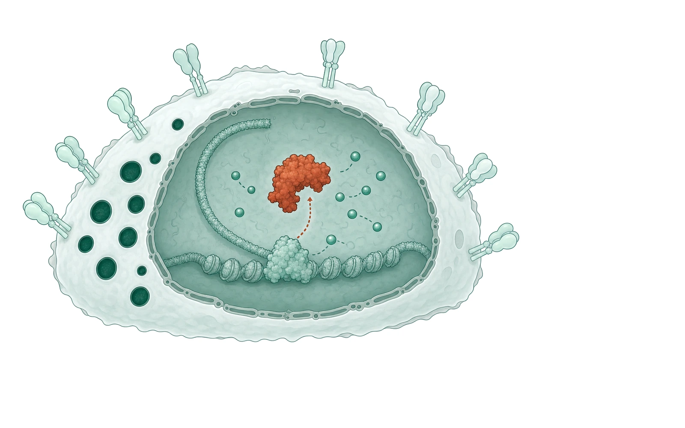
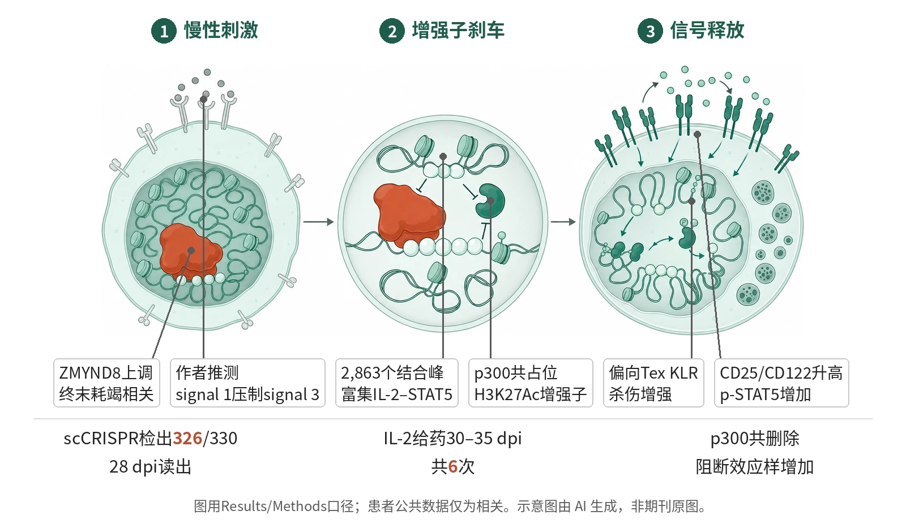

封面示意：剖开的白色T细胞，赤陶红元素为ZMYND8蛋白。图片由 AI 生成，非原文图片。
在LCMV与黑色素瘤模型中，靶向ZMYND8使P14细胞偏向效应样耗竭状态，并增强杀伤与免疫治疗反应。

- 慢性刺激上调ZMYND8
- ZMYND8压制p300增强子
- IL-2R–STAT5被释放
- Tex KLR与杀伤增强
图示概括本文验证链条：慢性抗原刺激下，ZMYND8占据Il2ra/Il2rb相关活性增强子并限制p300、H3K27Ac与IL-2R–STAT5信号；删除ZMYND8后，CD25/CD122和p-STAT5升高，耗竭T细胞偏向Tex KLR等效应样状态。示意图由 AI 生成，依据原文结果绘制，非期刊原图，不代表分子比例
研究背景与待解问题
慢性感染和肿瘤会让CD8+T细胞进入耗竭程序：高亲和力IL-2受体亚基下降，STAT5激活不足，细胞从祖细胞样耗竭状态走向终末耗竭，而不是形成更具杀伤力的效应样群体。免疫检查点阻断可短暂推动效应样细胞，但终末化和信号衰减仍限制疗效。
Wang等在Nature追问一个上游问题：持续抗原刺激如何通过表观遗传机制压低IL-2R–STAT5轴。研究切口不是直接加细胞因子，而是在体内耗竭T细胞中筛选染色质调控因子，寻找能把Tex KLR等效应样状态从终末耗竭中释放出来的刹车分子。
研究设计
作者先在Cas9 P14细胞中做体内scCRISPR和bulk CRISPR筛选。库含91个表观遗传因子、9个已知转录因子、每基因3条sgRNA和30条非靶向对照，共330条sgRNA；P14细胞转入小鼠后感染LCMV Cl13，在28 dpi读出，scCRISPR检出326条sgRNA，并注释出4类耗竭状态。
后续验证采用双色转移和单色治疗体系。双色转移把Ametrine标记的sgZmynd8 P14与GFP标记的sgNTC spike按1:1混合，转入同一宿主；频率、gMFI和细胞数相对spike及转移前输入比例归一化，以降低宿主差异。该研究为临床前比较，未按临床试验方式设计组间效能。
核心结果
筛选锁定ZMYND8
在28 dpi的体内筛选中，4类耗竭状态被注释为Tex prog、Tex int、Tex KLR和Tex term。Zmynd8位列效应样细胞的顶级负调控因子、Tex term的正调控因子；bulk CRISPR又确认其为效应样相对Tex term的顶级命中。另一个IL-2信号筛选显示，削弱IL-2信号会减少效应样和总P14，解除负调控则增加这些细胞。
命运偏向效应样
scRNA-seq与流式验证显示，ZMYND8缺失使P14细胞选择性累积为Tex int和Tex KLR，并减少Tex term；这一变化跨多个时间点出现。3条独立sgRNA中，g1和g2效应明显，g3较弱；naive P14的Cas9-RNP编辑也复现该方向。90 dpi仍见Tex KLR增加，多组织方向一致。
抗病毒增强有限
抗病毒读出显示单独删除ZMYND8能提高gp33靶细胞杀伤：ex vivo各耗竭亚群杀伤增强，in vivo也更快清除gp33脉冲脾细胞。但病毒负荷仅小幅下降，作者称为modest reduction，说明单一靶向并未完全恢复慢性感染控制。
与IL-2协同
IL-2在30–35 dpi每日给药、共6次，并在36 dpi评估体内杀伤和细胞状态。接受ZMYND8缺失P14加IL-2的小鼠，病毒载量低于任一单药，3 h体内杀伤更强；细胞层面，组合进一步增加效应样细胞和Tex KLR，并减少Tex term，符合释放IL-2响应的解释。
肿瘤与ICB扩展
在B16-gp33模型中，ZMYND8缺失P14降低肿瘤负荷并延长生存；与IL-2联合进一步改善控制和生存。pmel细胞在B16F10中方向一致。CD19 CAR T模型中，ZMYND8缺失也提高CD25、CD122和p-STAT5，并降低TOX。抗PD-L1实验中，ZMYND8缺失维持CD25和p-STAT5升高，联合治疗改善肿瘤控制、P14浸润和生存。
机制解读
原文实验证明：筛选还把ZMYND8列为STAT5活性的顶级负调控因子；ZMYND8缺失细胞中STAT5CA Up签名升高、STAT5CA Down签名降低。IL-2刺激后，鼠和人CD8+T细胞的p-STAT5均上升；CD25和CD122也增加，提示ZMYND8限制IL-2R–STAT5信号。
CUT&RUN定义了2,863个ZMYND8核心结合峰，IL-2–STAT5信号为最富集通路，包含Il2ra和Il2rb。ZMYND8结合H3K4me1/H3K27Ac活性增强子，并与p300共占位；共删除STAT5B逆转了ZMYND8缺失带来的效应样和Tex KLR累积，也逆转GZMA、GZMB、IFNγ和TOX表型，CD25或CD122共删除效果大体类似。共删除p300阻断了ZMYND8缺失诱导的效应样和Tex KLR增加，并校正Tex prog或Tex term减少、逆转CD25和CD122升高。
作者推测：作者推测，持续TCR刺激诱导ZMYND8表达，形成一种表观遗传反馈：signal 1的慢性抗原刺激通过ZMYND8压制signal 3的IL-2信号，使细胞更易走向终末耗竭。公共患者数据只支持ZMYND8表达或签名与耗竭、ICB反应的相关性，不能单独证明患者内因果。
局限与不确定
- 第一，外推边界清楚。核心因果验证主要来自LCMV Cl13、B16-gp33和B16F10黑色素瘤模型，以及健康供者来源人CD8+T细胞体外慢性刺激；作者也明示，慢性LCMV感染和黑色素瘤之外的适用性仍待检验。
- 第二，终点层级仍限于临床前表型和模型疗效。流式验证示例为效应样/Tex term的n=7/组和Tex KLR的n=9/组，肿瘤治疗按Methods为5–8只/组；这些数据来自动物和体外体系，不能替代患者中的剂量、持久性和疗效终点。
- 第三，方法层面，肿瘤实验依赖B16-gp33和B16F10等细胞系；Methods明确细胞系未独立认证或支原体检测。肿瘤生长曲线每2天测量，伦理上限为3,000 mm3或≤20%体重，这界定了动物读出边界。
临床/产业意义
如果后续能在更多肿瘤类型和工程化T细胞体系中复现，ZMYND8可成为一种“细胞内解除刹车”的候选靶点：它不只是提高单个效应分子，而是把耗竭T细胞的命运从Tex term拉向Tex KLR等效应样状态，并增强IL-2R–STAT5可响应性。
对细胞治疗而言，结果提示可在P14或pmel等抗原特异细胞中编辑ZMYND8，并与IL-2或PD-L1阻断配合；CD19 CAR T部分仅显示IL-2R–STAT5、TOX和NKG2D等表型。目前证据仍限于临床前体系，不能解读为患者疗效已被验证。